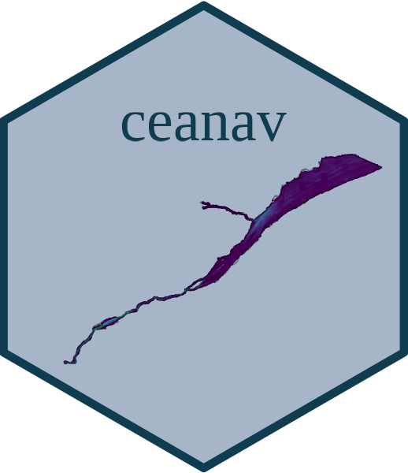

ceanav 
Ce dépôt contient le compendium de recherche pour le projet pilote d’évaluation des effets cumulatifs des activités maritimes sur le Saint-Laurent et la rivière Saguenay. Il contient l’ensemble du code nécessaire pour importer, formater et intégrer les données, et pour faire les analyses, les figures et le rapport d’étude.
Puisque les données ne sont pas incluses à ce compendium de recherche, l’ensemble du code doit être exécuter afin de reproduire l’évaluation des effets cumulatifs. Il est toutefois à noter que l’ensemble des données ne sont pas disponibles ou accessibles par des plateformes de données ouvertes dû à des ententes de partage de données. Il est donc nécessaire de nous contacter ou de contacter les personnes ressources identifiées afin d’obtenir ces données.
Comment citer
Veillez citer ce compendium de recherche comme suit:
Beauchesne D (2022) Compendium de recherche pour le projet pilote d’évaluation des effets cumulatifs des activités maritimes sur le Saint-Laurent et la rivière Saguenay. Consulté le [AAAA-MM-JJ]. https://github.com/EffetsCumulatifsNavigation/ceanav.
Contenu
Ce compendium de recherche est structuré comme suit:
-
data/: contient les données du projet. Notez que la majorité des données ne sont pas incluses au dépôt, mais que les métadonnées pour l’ensemble des données sont accesibles.
- data-basemap/: contient des données spatiales pour générer les cartes de bases du projet
- data-contact/: contient les données sur les différentes personnes ressources
- data-format/: contient les données formatées
- data-integrated/: contient les données formatées
- data-metadata/: contient les métadonnées pour les données brutes et les données intégrées
- data-output/: contient les résultats des analyses du projet
- data-param/: contient les paramètres généraux utilisés pour le projet (i.e. projection spatiale, étendues spatiales, palettes de couleur, nomenclature, etc.)
- data-raw/: contient les données brutes; ⚠️ l’ensemble des données du projet ne sont pas disponibles puisque certaines données sont protégées par des ententes de confidentialité. Consultez les métadonnées pour de plus amples informations
- data-vulnerability/: contient les données de vulnérabilité des composantes valorisées aux stresseurs environnementaux
docs/: contient la page web de ce compendium de recherche générée à l’aide de
pkgdown-
figures/: contient l’ensemble des figures générées pour le projet pilote
- figures-integrated: figures des données intégrées pour chaque catégorie de stresseurs environnementaux et de composanges valorisées
- figures-output: figures des résultats d’analyses
inst/templates: canevas de présentation utilisés pour présenter les données brutes et les données formatées
man/: contient la documentation des fonctions R
-
R/: contient l’ensemble des fonctions R développées pour le projet pilote
-
00-pipeline.R: contient une fonction qui permet d’accéder aux données brutes, les formater, l’intégration des données, les analyses, les figures et tableaux, et le rapport du projet. ⚠️ cette fonction prend un temps considérable è executer. -
ana_nom.R: contiennent les scripts d’analyse du projet -
dataXXXX-nom.R: contiennent les routines pour accéder aux données brutes et pour les formater -
fig_nom.R: contiennent les scripts pour générer les figures -
fnc_nom.R: contiennent les fonctions R utilisées pour le projet -
int-cv_nom.R: contiennent les routines pour faire l’intégration des composantes valorisées -
int-st_nom.R: contiennent les routines pour faire l’intégration des stresseurs environnementaux -
rep_nom.R: contiennent des fonctions R utilisées pour générer des portions du rapport d’étude -
vuln_nom.R: contiennent des les scripts utilisés pour intégrer les données de vulnérabilité des composantes valorisées aux stresseurs environnementaux
-
report/: contient le rapport du projet
_pkgdown.yml: fichier de métadonnées pour générer la page web du compendium de rechercheDESCRIPTION: contient les métadonnées du projet (auteurs, date, dépendences, etc.)README.Rmd: description du compendium de recherche
Utilisation
Clonez ce dépôt et executez ces commandes dans votre terminal:
R -e 'library(devtools);document()'
R CMD INSTALL .
R
library(ceanav)
pipeline()⚠️ ce compendium de recherche n’est pas entièrement reproductible dû à des restriction imposées au partage de certaines des données utilisées pour l’évaluation.